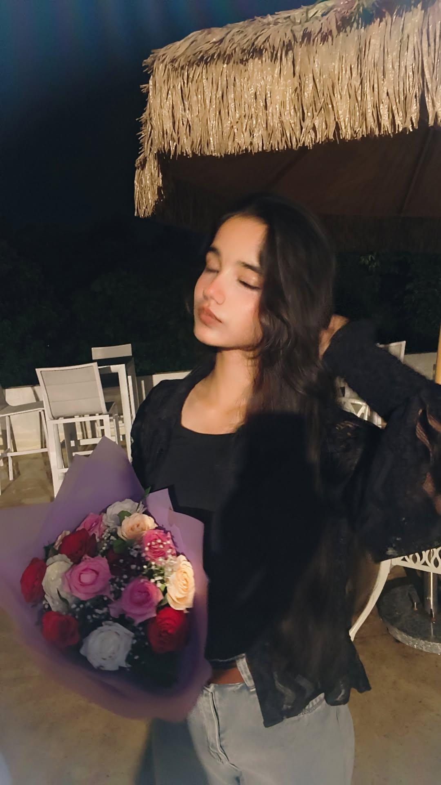

Open when you need a smile
When you need a quick smile
Remember the jokes that made zero sense to anyone else on earth and still had us laughing until we couldn’t breathe?
For Akkú, always
Same places. Different skies.
Always you.
01 The day our orbits met
Where the archive begins — one frame that quietly changed the gravity of ordinary days.
See where the story goes02 The little things
Every frame is one more reason
to stay a little longer.
Take your time. The garden is not going anywhere.
03 Little moving pictures
Eight tiny films from our own private cinema. Pick a scene, settle in, and let it play.
A little soundtrack for the walk: Jaavedaan Hai
04 In case you forget
A tiny note from the garden, whenever you need it.
Because you make ordinary days glow without even realizing you are doing it.
A little truth, for you
05 A note for you
Open whichever little note you need today. They are all yours.

Open when you need a smile
Remember the jokes that made zero sense to anyone else on earth and still had us laughing until we couldn’t breathe?
A little letter, just for you

06 The garden stays open
Same places. Different skies. Always you.